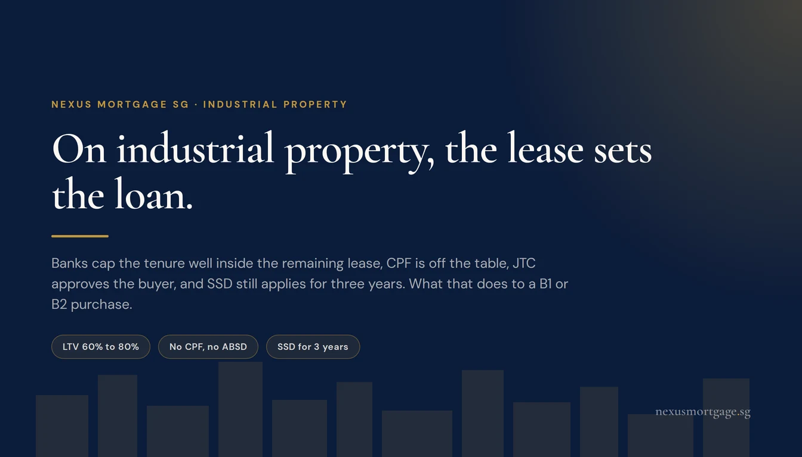
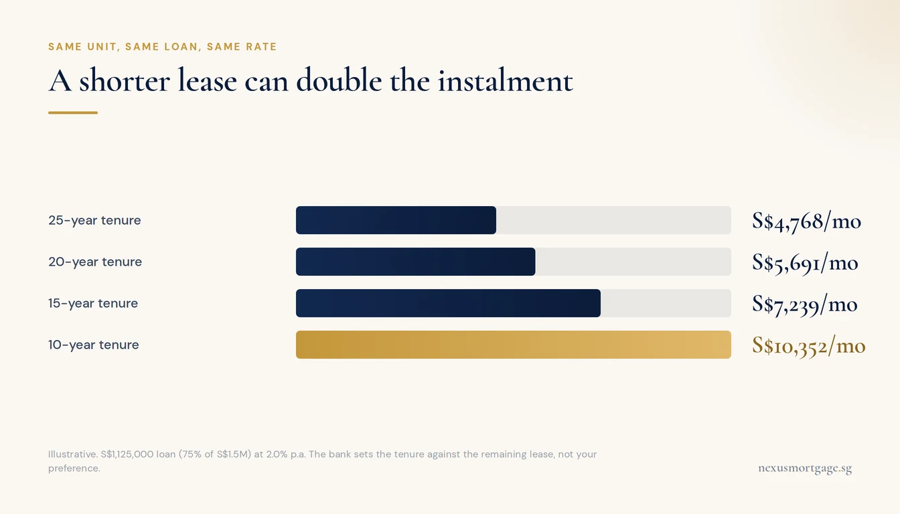
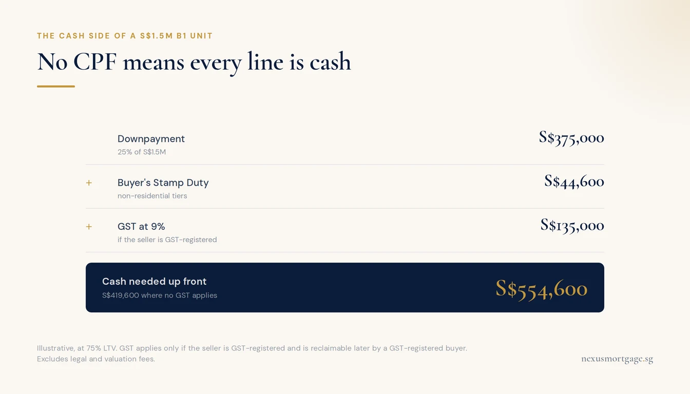

Industrial Property Loans in Singapore: The Lease Sets the Loan

Banks lend on B1 and B2 industrial property in Singapore at 60% to 80% LTV, set bank by bank because MAS residential limits do not apply. The number that usually decides the deal is not the rate but the remaining lease, because banks cap the tenure well inside it, and a short tenure can double the monthly instalment. There is no CPF, so the downpayment, Buyer's Stamp Duty, any 9% GST and every instalment are cash. There is no ABSD, but unlike commercial property there is SSD for three years. On JTC land the buyer also needs JTC's approval before the sale can complete.
Why Industrial Is Its Own Asset Class
Industrial property gets lumped in with commercial property, and for most financing purposes the two do share a framework: no MAS loan-to-value limits, no ABSD, no CPF, and credit decided largely on the borrower's business. Our guide to commercial property loans covers that shared ground in full.
But industrial property carries four features that shops and offices do not, and every one of them changes the loan.
- Short leases. Much of Singapore's industrial stock sits on 30-year or 60-year leases, many of them from JTC. Shophouses and offices are mostly freehold or 99-year.
- A landlord with a say. On JTC land, the state landlord approves who may buy and what they may do there.
- Use rules. URA requires at least 60% of an industrial unit's floor area to be used for industrial activity, with ancillary uses such as offices and showrooms capped at 40%.
- Seller's Stamp Duty. Industrial property carries SSD for three years. Commercial property carries none.
The two zones you will see most are B1, for clean and light industry such as light assembly, e-commerce fulfilment and food factories, and B2, for general and heavier industry. Banks lend on both, but they lend on them differently, and the reason is mostly about who else could use the building if the borrower failed.
The Remaining Lease Sets the Loan

Check the lease expiry before you negotiate the price. It decides the tenure.
On a condo, the tenure question is about your age. On an industrial unit, it is about the land.
Banks want a loan fully repaid well before the lease runs out, because a property on a dying lease is collateral that shrinks towards zero. In practice they cap the tenure so that a meaningful buffer of lease remains at maturity. The exact buffer varies by bank and by asset, but the effect is consistent: a unit with 20 years left will not get a 20-year loan, and may be offered 10 to 15.
That matters far more than the headline rate. Take a S$1.5M unit financed at 75%, a loan of S$1,125,000, at an illustrative 2.0% p.a.
| Tenure the bank allows | Monthly instalment at 2.0% | Stress-tested at 5.0% |
|---|---|---|
| 25 years | S$4,768 | S$6,577 |
| 20 years | S$5,691 | S$7,425 |
| 15 years | S$7,239 | S$8,896 |
| 10 years | S$10,352 | S$11,932 |
Same property, same loan, same rate. Moving from a 25-year to a 10-year tenure more than doubles the monthly outgoing. For a business buying premises to replace rent, that is the difference between owning being cheaper than renting and owning being a cash drain.
Two practical rules follow. First, find out the exact lease expiry before you negotiate the price, not after. Second, a short-lease unit is not automatically a bad buy. It is cheaper for a reason, and a business with strong cash flow can repay quickly. It is just a different purchase, and it should be modelled on the tenure a bank will actually grant, not the one you would like.
LTV and the Cash You Actually Need

GST can be reclaimed, but the bank does not lend against it. Fund it up front.
Because MAS Notice 632 covers residential property, each bank sets its own industrial LTV. The range we see is 60% to 80% of the lower of price or valuation. Strong owner-occupiers reach the top of it. Investment units, very short leases and specialised B2 buildings sit lower.
Everything outside the loan is cash. That includes items that home buyers are used to paying from CPF.
| Cost on a S$1.5M B1 unit | Amount | Notes |
|---|---|---|
| Downpayment at 75% LTV | S$375,000 | Cash only. No CPF. |
| Buyer's Stamp Duty | S$44,600 | Non-residential tiers: 1%, 2%, 3%, then 4% to S$1.5M |
| GST at 9%, if the seller is GST-registered | S$135,000 | Reclaimable later by a GST-registered buyer, but funded up front |
| Cash before legal and valuation fees | S$554,600 | S$419,600 if no GST applies |
Non-residential BSD runs at 1% on the first S$180,000, 2% on the next S$180,000, 3% on the next S$640,000, 4% on the next S$500,000 and 5% above S$1.5M. Our stamp duty calculator runs the tiers for any price.
The GST line catches people most. It only applies when the seller is GST-registered, which is common with developers and corporate sellers and less common with individual owners. When it does apply, a GST-registered buyer can usually claim it back as input tax, but that can take months, and the bank does not lend against it. Budget for it as a real cash outflow either way.
Company or Personal Name
Who borrows changes the whole assessment, and on an industrial purchase it is usually the most important structuring decision you make.
In your personal name, the loan falls under the 55% Total Debt Servicing Ratio, and a non-residential loan is stress-tested at 5%, not the 4% used for homes. From the table above, a 20-year loan of S$1,125,000 stress-tests at S$7,425 a month. With no other debts, that needs a gross income of about S$13,500 a month to pass. At a 15-year tenure it needs about S$16,200. If you are self-employed, banks also haircut variable income, which our self-employed TDSR guide works through.
Through an operating company, the bank generally underwrites on the company's audited financial statements, cash flow and bank balances instead, with a director's personal guarantee. This is how a business borrows well beyond what its directors could carry personally. Banks commonly look for a trading history of one to two years and two sets of accounts. A pure investment-holding company with no real operations is often assessed against the guarantor anyway, so the structure has to match the substance.
For owner-occupied premises the company route is usually the natural one: the business that uses the building owns it, pays for it from its own cash flow, and the rent it no longer pays becomes the repayment.
JTC Land: The Approvals Banks Check
A large share of industrial land in Singapore is leased from JTC. If the unit you want sits on JTC land, the landlord is part of your transaction, and the bank knows it.
- JTC approves the buyer. A transfer or assignment of a JTC lease needs JTC's approval. JTC assesses the incoming owner's business plan, including fixed asset investment and job creation, against its aim of adding value to the economy. Standard applications take up to two months from a complete submission.
- Holding periods. Leases carry an assignment prohibition period during which the lease cannot be transferred at all, and transfers are strictly prohibited once fewer than five years remain on the lease.
- Rent resets. Where JTC charges land rent, it generally revises to prevailing posted rates after a transfer, and assignment levies can apply. Put that into the running cost before you commit.
- Subletting is capped. A lessee may apply to sublet up to 30% of gross floor area to non-related businesses, for no more than three years at a time, and only with JTC's written consent.
- The mortgage is notified. When a mortgage over a JTC lease is created or transferred, your solicitors notify JTC on your behalf.
For financing, the point is sequencing. A bank's letter of offer is conditional on the property being validly transferable to you, so on JTC land your loan approval and JTC's approval of your business plan run in parallel, and neither is the finish line on its own. Allow for that in the completion date you agree with the seller.
Strata units on privately held industrial land do not go through JTC, which is one reason they trade differently. They remain subject to URA's 60:40 use rule and to the development's own conditions.
SSD: The Exit Cost Commercial Buyers Never Pay
Buyers who have bought shops or offices before often assume industrial works the same way on exit. It does not.
| Sold within | Industrial SSD | Commercial SSD |
|---|---|---|
| 1 year | 15% | None |
| 2 years | 10% | None |
| 3 years | 5% | None |
| After 3 years | None | None |
SSD applies to industrial property acquired on or after 12 January 2013 and is charged on the higher of the sale price or market value. On a S$1.5M unit sold in the second year, that is S$150,000. It matters most for anyone buying with a short horizon, and for anyone who might be forced to sell early if the business changes. Price it into the decision now, not at the point of sale.
What the Bank Actually Underwrites
Industrial loans are priced case by case, and the bank-to-bank spread is wide. What moves your LTV and your rate:
- Intent. Owner-occupied premises get the best terms. A unit bought to lease out is priced on its rental income and the quality of the tenant.
- The business. Two years of healthy accounts, visible cash flow and a clean banking record open the sharpest tiers. Our case study of a S$4M equity term loan on an industrial unit shows what a bank looked at in practice.
- The building. A standard B1 strata unit in a busy estate is easy to resell, so banks like it. A single-user B2 building fitted out for one heavy process has fewer natural buyers, and banks lend less against it.
- The lease. Covered above, and usually the deciding factor.
- The relationship. Deposits and an existing operating account with the lender genuinely move pricing on business lending.
Because appetite for industrial risk varies by bank and shifts quarter to quarter, the most useful thing you can do before committing to a purchase is put the same case in front of several lenders at once. That is what an industrial and commercial loan review with us does, and it costs you nothing: banks pay the brokerage on disbursement.
Frequently Asked Questions
Typically 60% to 80% of the lower of price or valuation, set by the bank rather than by MAS. Owner-occupiers with two years of healthy company accounts sit at the top of the range. Investment units, short-lease units and specialised B2 buildings sit lower. Everything outside the loan must be paid in cash, because CPF cannot be used for industrial property.
Commonly 15 to 25 years, but the remaining lease is usually the real cap. Banks want the loan repaid well before the lease runs out, so a unit with 20 years left may be offered 10 to 15. Many industrial units sit on 30-year or 60-year leases, which is why tenure is often the number that decides whether the purchase works.
No. CPF Ordinary Account savings can only be used for residential property. The downpayment, stamp duty, any GST, legal fees and the monthly instalments on an industrial purchase are all paid in cash.
No ABSD, even on a second or third purchase. SSD does apply: 15% if sold within one year, 10% within two and 5% within three, for industrial property acquired on or after 12 January 2013. After three years there is none.
In your personal name, yes, at 55% with a 5% stress rate for non-residential loans. An operating company is generally underwritten on its own accounts and cash flow instead, with a director's guarantee. An investment-holding company may still be assessed against the guarantor.
On JTC-leased land, generally yes. JTC assesses the incoming owner's business plan, and transfers are barred within the lease's assignment prohibition period and once fewer than five years of lease remain. Units on privately held industrial land do not need JTC's approval.
Often, within limits. On JTC premises a lessee may apply to sublet up to 30% of floor area to non-related businesses for up to three years at a time, with JTC's written consent. Banks price investment units more conservatively, so expect a lower LTV and a wider spread.
Further reading
- Commercial property loans in Singapore: eligibility, documents and the bank-to-bank rate gap
- Unlocking S$4M from an industrial unit: an equity term loan case study
- Caveat loans for businesses: short-term property-backed funding when a bank is too slow
- Stamp duty calculator: BSD on residential and non-residential property
- Commercial and industrial loan review: one case, several lenders, no fee to you
This article is general information for Singapore businesses and property buyers. It is not financial, legal or tax advice, and it is not an offer of credit. LTV, tenure and pricing on industrial property are set by each lender case by case. Instalment figures are illustrative, assume a S$1,125,000 loan and the rates shown, and will differ from any actual offer. JTC's transfer, subletting and rent conditions vary by lease and development; confirm the terms of your specific lease with JTC and your solicitor. Stamp duty figures reflect the non-residential BSD rates in force from 15 February 2023 and the industrial SSD regime for property acquired on or after 12 January 2013, current as at October 2026. Sources: MOF: BSD rates for higher-value properties, IRAS: SSD for industrial property, JTC: Transferring your lease, JTC: Subletting your premises.

About the author — Dan Ler has advised on Singapore home loans since 2017 at Nexus Mortgage SG, an independent brokerage comparing 16+ MAS-regulated lenders. Nexus has facilitated 500+ home loans across HDB, EC, private condo and landed property segments. Banks pay Nexus on disbursement, so there is no cost to the borrower.